Get your home ready to sell
in 16 days
Sell on easy mode
I’ll do the hard stuff in 16 days
Staging included free, up to $7,500
Sell on easy mode
I’ll do the hard stuff in 16 days
Staging included free, up to $7,500
Results from 1458 Portobelo Dr · San Jose
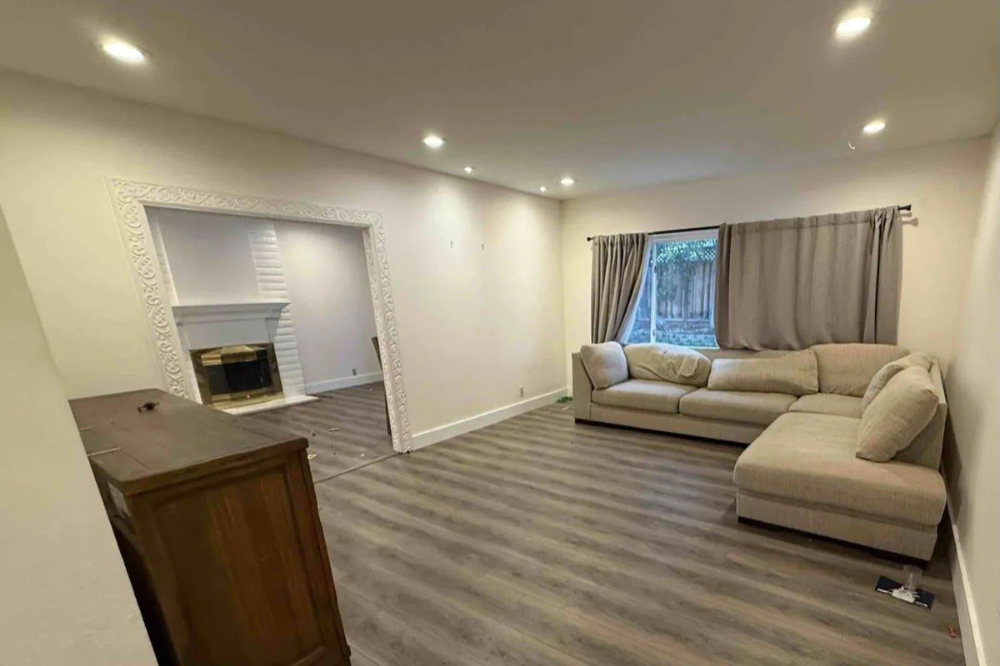
Before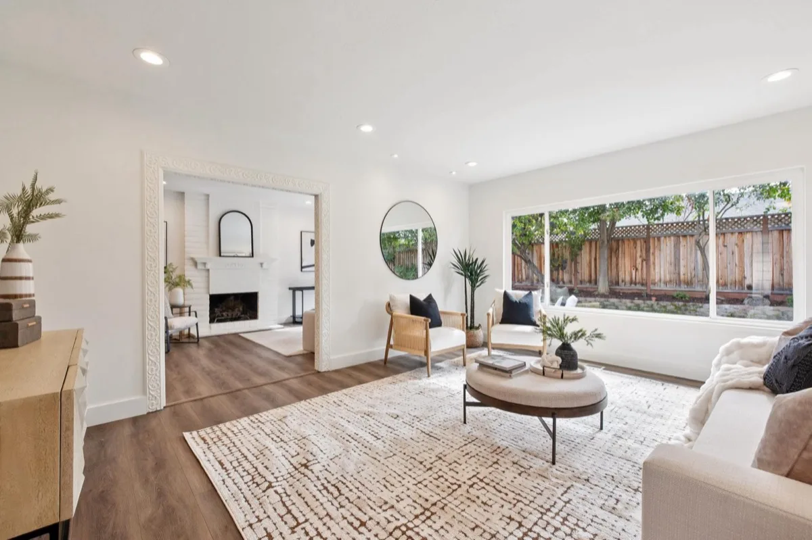
After Before
Before After
After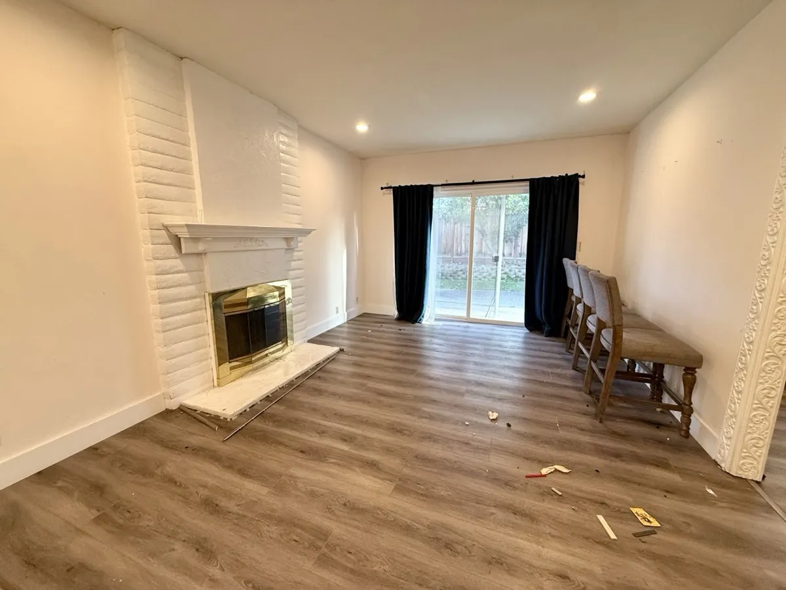
Before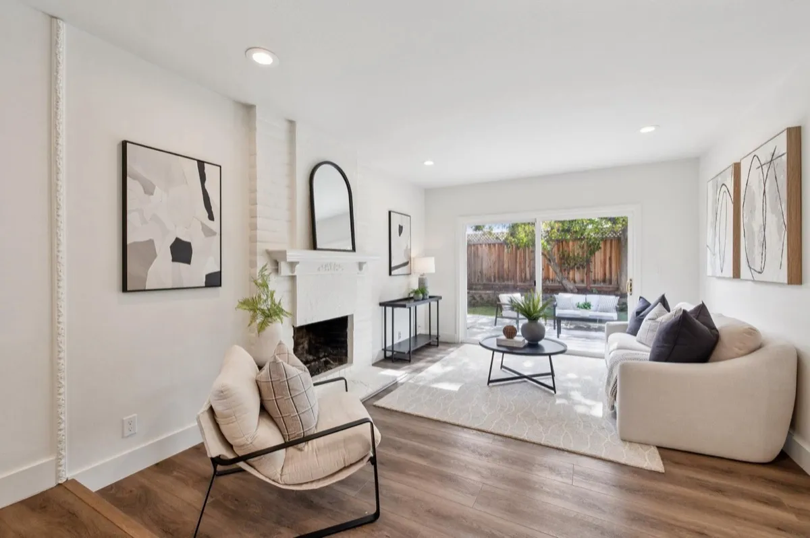
After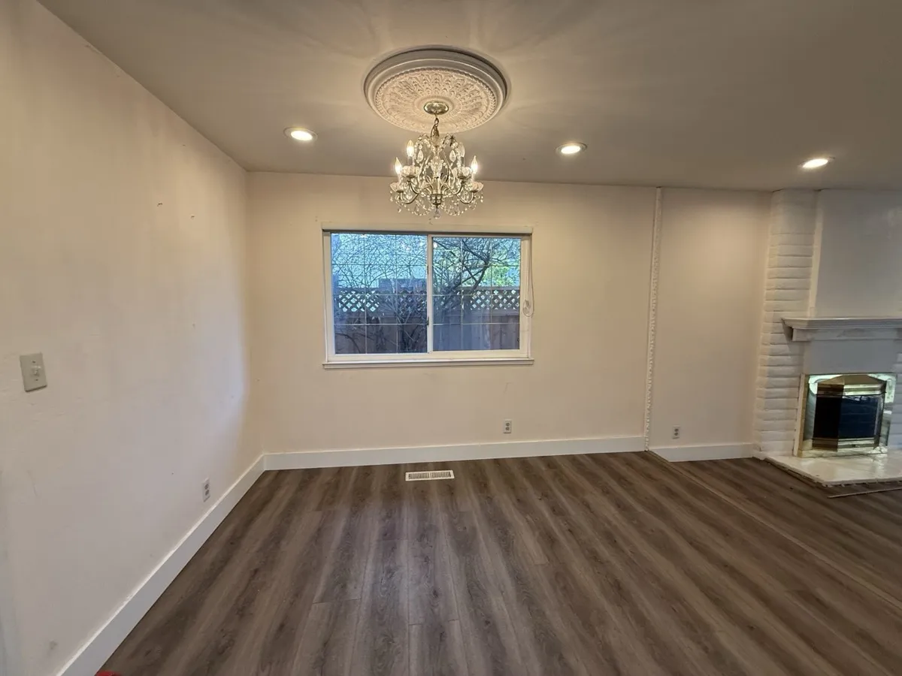
Before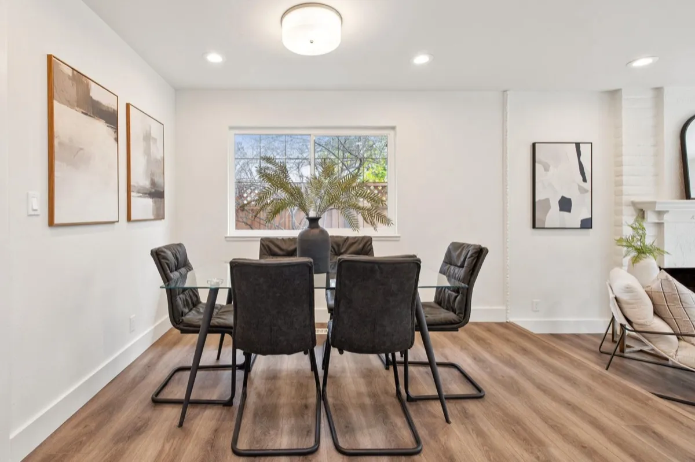
After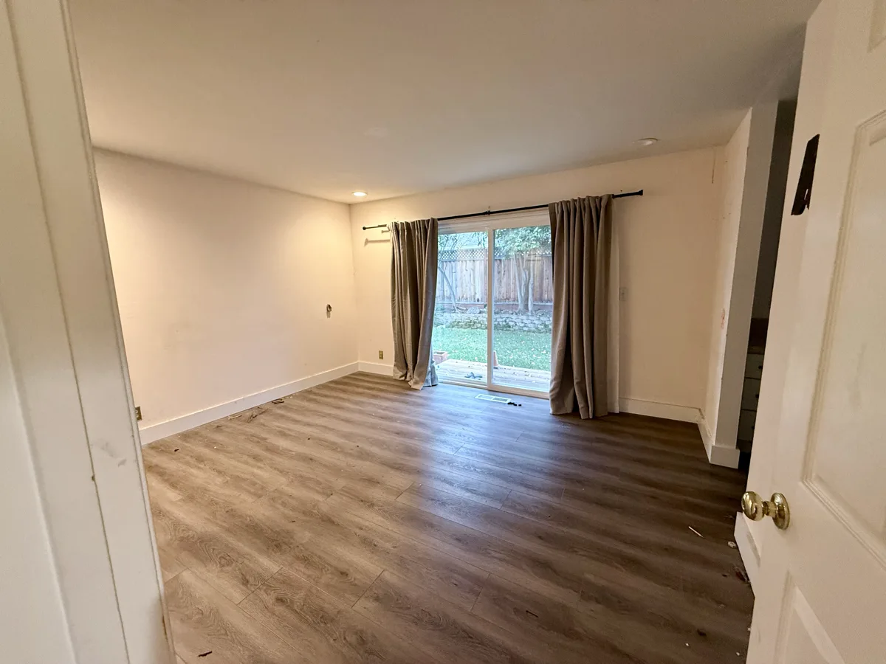
Before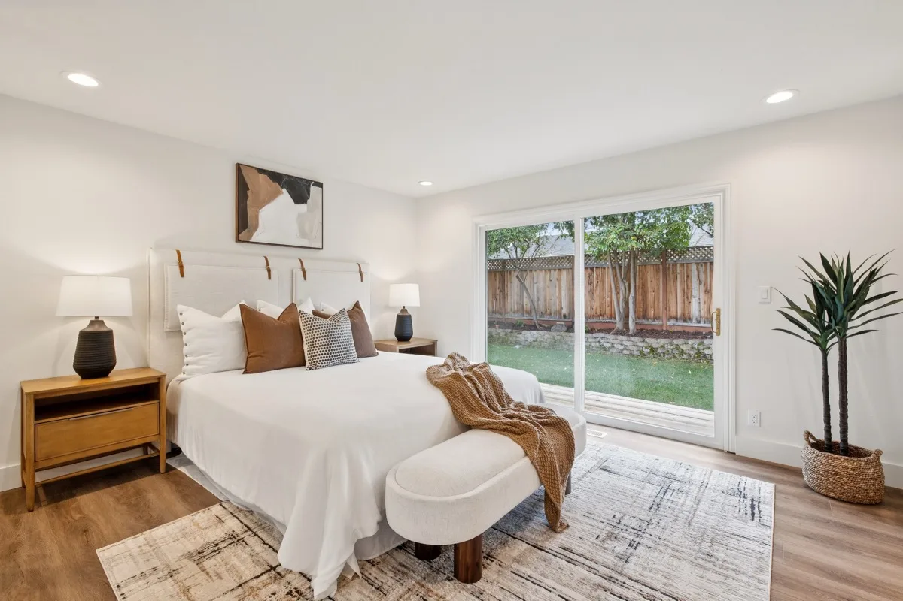
After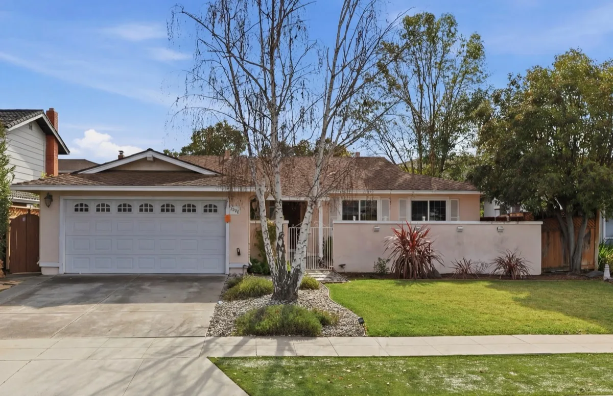
Before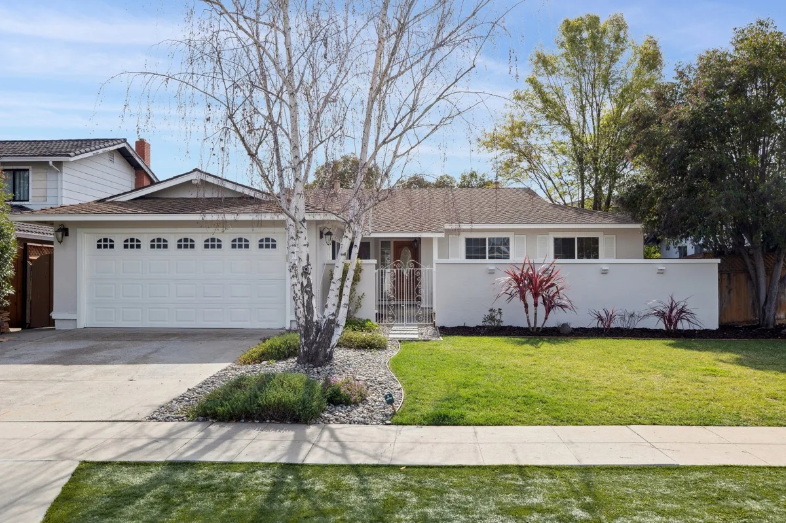
After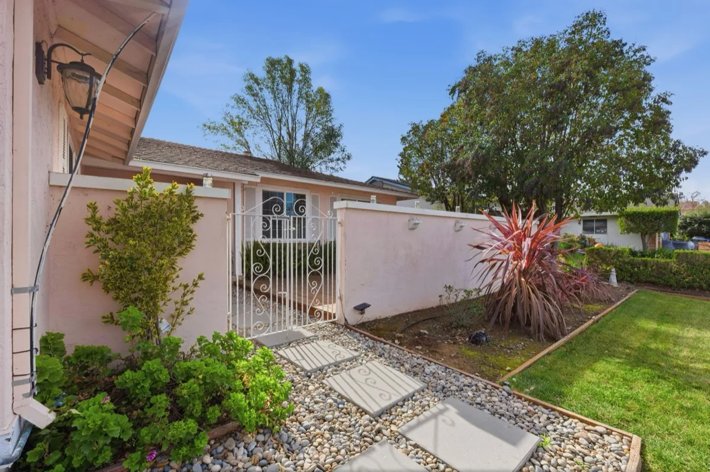
Before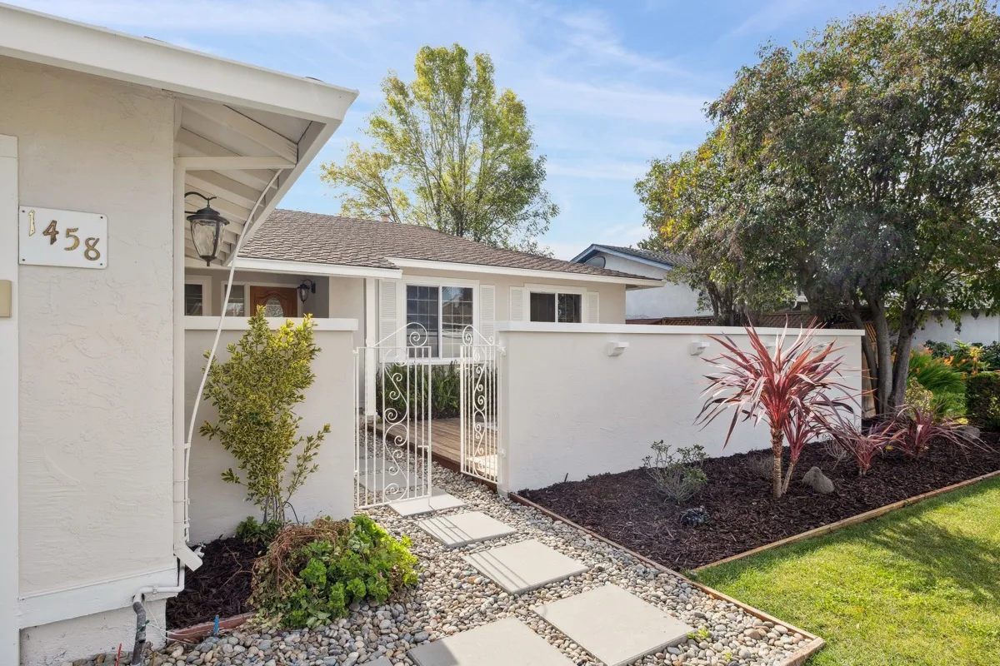
After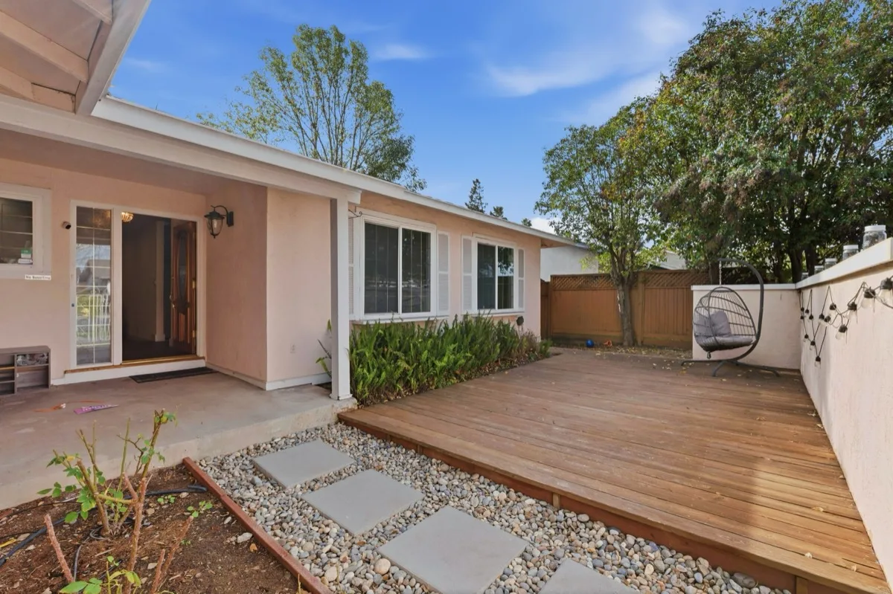
Before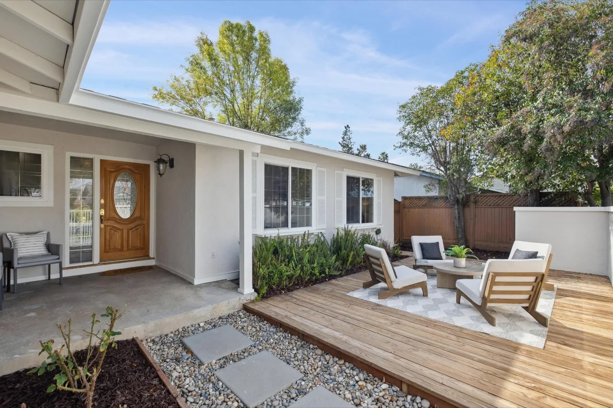
AfterI manage every detail to get your home prepped in 16 days and then sold, giving you total peace of mind and maximum equity, without ever having to manage contractors or show up in person.
What’s included
Wangda Tan, 1458 Portobelo, San Jose
“When we finally saw the house after everything was finished, we were honestly amazed.”
I'll walk your home, tell you what I'll fix, what I'll skip, and what it'll cost.
My Budget Guarantee
Your prep bill won't exceed your approved budget by more than 10%. If it does, I pay for the overage.
Staging included free, up to a $7,500 value.
The two things that go wrong on any home project are the budget and the timeline. 16DayPrep is built to remove both: a written plan and a fixed budget before any contractor starts, and the whole job on a 16-day clock. You approve the number, then you hold me to it. This is the number I gave my last homeowner at 1458 Portobelo, against what it actually cost.
My Budget Guarantee
Your prep bill won’t exceed your approved budget by more than 10%. If it does, I pay for the overage.
The 16DayPrep: what I did on a recent San Jose sale.
The seller signed up and handed me the keys to 1458 Portobelo Dr in San Jose.
16 days later, this home went from "needs work" to clean, move-in ready, and market-ready. I put the house on the market on day 17. My seller went under contract in 7 days.
A total of 24 days from when he handed me the keys to accepting an offer.
What I did
In 16 days.
Prep work cost: $18,454.
What I skipped
The return wasn’t worth it.
What a seller said
"He talked us out of repainting the kitchen cabinets and replacing the counters because the whole kitchen layout is dated."